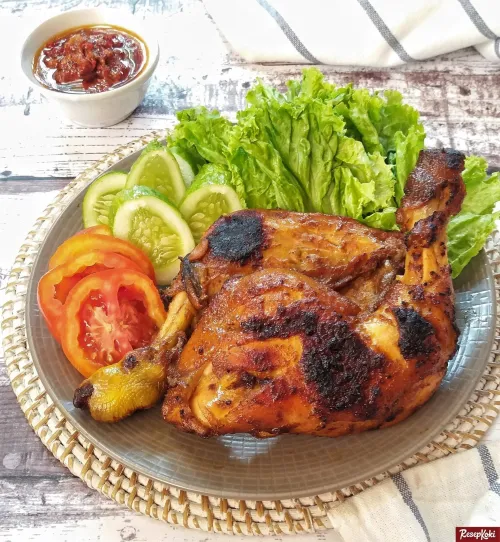
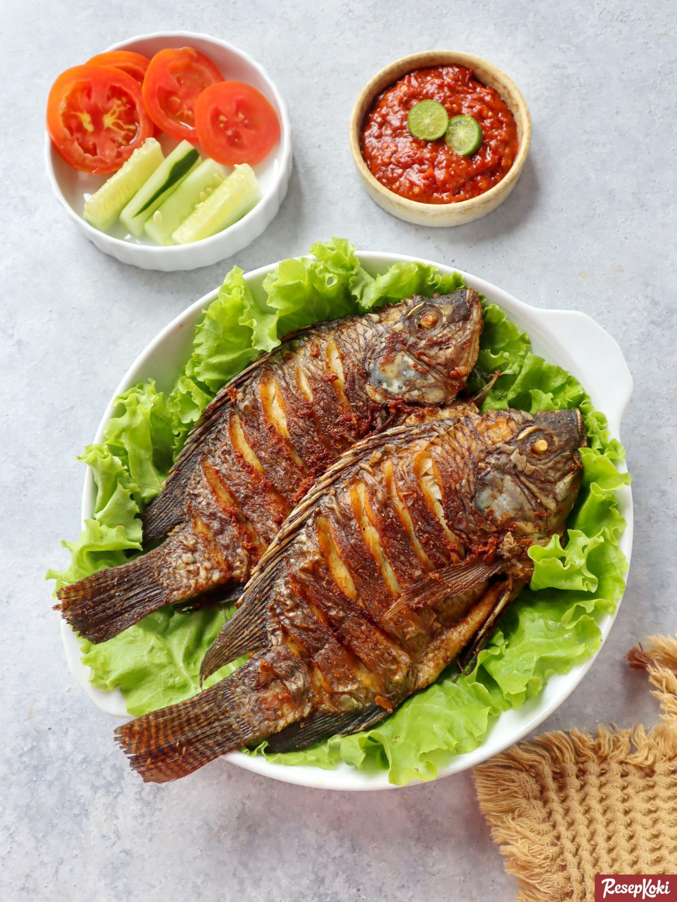
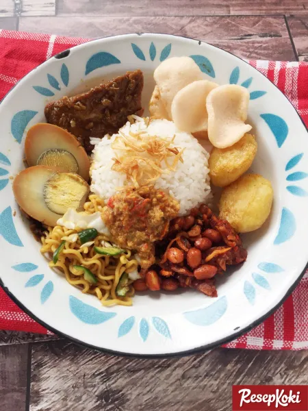

Masakan rumahan khas nusantara
Nikmati Kelezatan Masakan Bu Eni
Dari dapur kami ke meja makan Anda. Setiap hidangan dimasak segar dengan bumbu pilihan dan resep warisan keluarga, menghadirkan rasa rumah yang hangat di setiap suapan.
25
pilihan menu
8
kategori masakan



Dimasak segar setiap hari
Kontak & Lokasi
Mampir atau Chat Kami
Temukan lokasi warung, lihat jam buka, dan scan QR WhatsApp untuk memesan dengan lebih cepat.
Informasi Kontak
- Alamat warung belum diatur
- Jam operasional belum diatur
- 6282163199525
Scan QR WhatsApp
Scan dengan ponsel untuk langsung chat dengan kami.